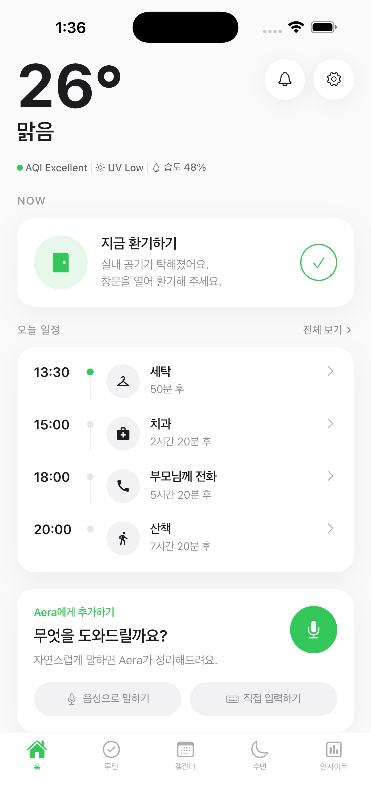
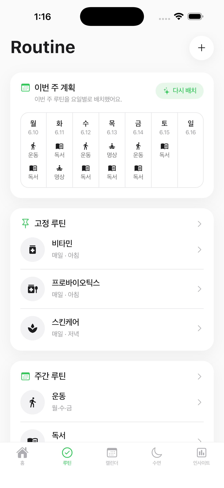
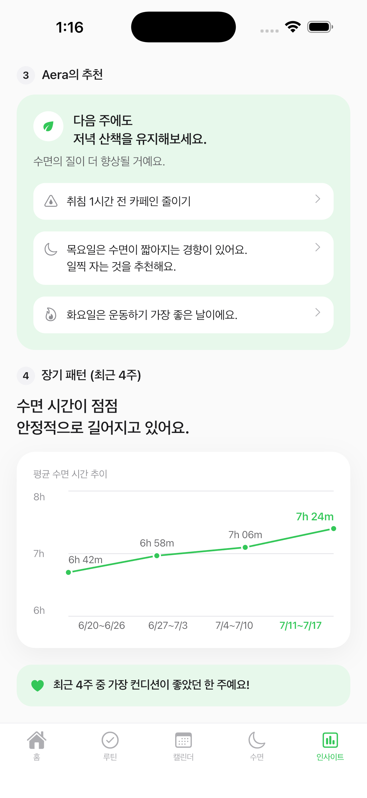

Today

Routine

Insight
01Problem & Insight
반복되는 결정이 일상의 에너지를 소모합니다.
Problem
사람들은 중요한 일보다, 반복되는 사소한 결정에 더 많은 에너지를 씁니다.
Insight
문제를 의지가 아니라, 결정이 끊임없이 필요한 일상으로 정의했습니다.
문제를 해결하는 것은 더 많은 정보를 주는 것이 아니라, 결정을 줄이는 것.
02Product
필요한 정보를 찾는 대신, 지금 할 일을 보여줍니다.
Today지금 필요한 행동을 먼저 제안
Decision선택해야 할 일의 우선순위 제시
Routine반복되는 행동 관리
Insight사용 패턴 확인
Notification필요한 순간 먼저 알림
03 · Takeaway & Role
정보를 모아 보여주는 앱이 아니라, 판단을 줄여주는 제품을 설계했습니다.
여러 변수를 의사결정 근거로 묶고, 다음 행동까지 연결하는 구조로 설계했습니다. 요구 정의·구조 설계·막힌 지점 판단은 직접, 코드 생성은 AI로 진행한 미출시 MVP입니다.
Research→Product Definition→UI / UX→Implementation
ROLE · 리서치 · 제품 정의 · 화면 설계 · 구현 — 전 과정 단독 진행
RESEARCH DOMAINS — Decision Science · Human-Centered AI · Context Awareness · HCI · Trust & Uncertainty · Calm Technology